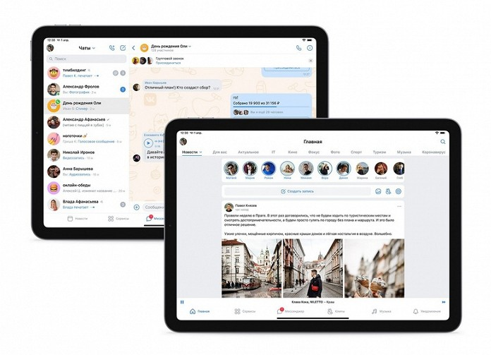

В нашей жизни нет и дня, когда мы не выходим в интернет за информацией, и считываем мы её посредством посещения тех или иных сайтов. Для чтения информации мы используем различные гаджеты: ноутбуки, смартфоны, планшеты и даже смарт-часы. Практически весь контент, изучаемый нами в сети, представлен в виде сайтов, которые пишут и адаптируют веб-разработчики. Вы, навреняка, обращали внимание, что на разных экранах (имеется ввиду гаджетах с разным разрешением экрана) одни и те же сайты выглядят по разному, напрмер, популярный сайт "вконтакте". Разумеется, чем больше разрешение экрана, тем более информативна страница, но ноутбук - это, все же, техника для помещения, а мы мобильны и не можем себе позволить все время использовать большой экран. Тем не менее, на смартфонах мы получаем полный фунционал того или иного сайта, несмотря на то, что все его элементы расположены в несколько ином порядке и имеют иные размеры. Так почему же это происходит, и как это работает? Сегодня мы расскажем про это, а также про то, как разработчику адаптировать материал, а ещё поделимся живым примером адаптации контента, который делал начинающий веб-разработчик (две кнопки ниже).
Какие виды экранов бывают и как на них отображается сайт

Смартфон 320 px
На смартфоне средняя ширина экрана 320 пикселей, поэтому многие шрифты выглядят меньше, чем на компьютере, а изображения и другие элементы уменьшены и выстроены, как правило, вертикально

Планшет 1024 px
Тут практически весь контент такой же, как и на компьютере, но часто поля, где очень много изображений (карточки товаров, фото и т.п.) выcтроены в ином порядке, нежели чем на компьютере
Ноутбук 1440 px
Ноутбук обладает наибольшим разрешением среди гаджетов, поэтому сайты на его экране наиболее полные и информативные. Как правило, разработчики пишут сайт изначально для этого типа экрана